7. Desktop capture evidence

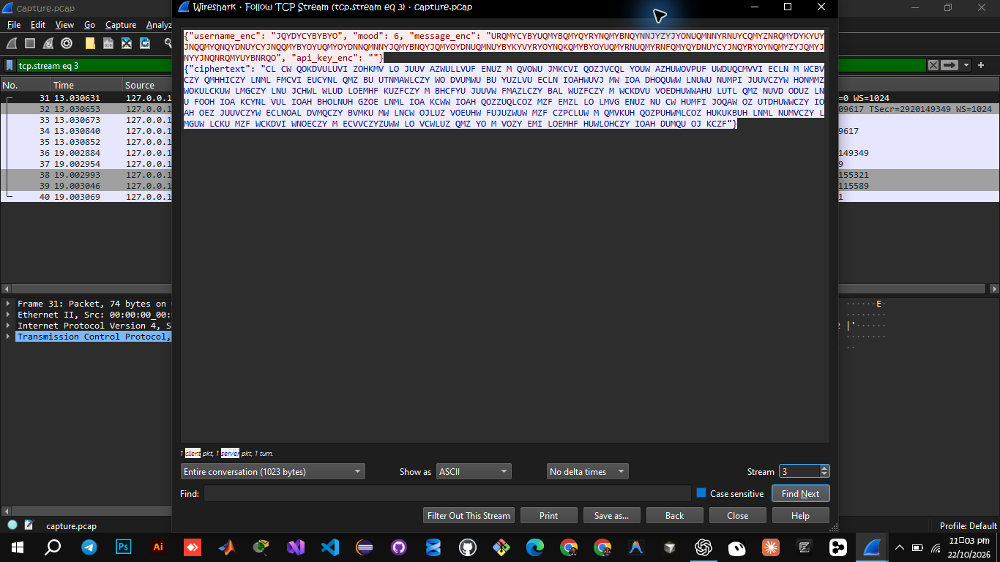
FAST–NUCES · Fall 2026 · Student: Rohaan
This report records five synthetic sessions captured on my local WSL Ubuntu loopback interface. The instructor-provided server cipher and protocol were preserved. The language-model call uses Gemini through a small adapter, following the instructor permission reported for this assignment.
| Item | Actual configuration |
|---|---|
| Environment | Windows desktop + WSL2 Ubuntu; Python 3.12.3 |
| Lab hostname | rohaan-psylab (private UTS namespace) |
| Transport | TCP JSON on 127.0.0.1:9999 |
| Capture | tcpdump on lo; tcp port 9999 |
| Model | gemini-3.5-flash-lite |
| Network status | Cloud-assisted: internet required for Gemini |
| Evidence date | Actual run: 2026-11-18T22:43:16+05:00 |
| Results | 5 complete sessions; 15 ciphertext fields; all recovered plaintexts verified |
| Task | Evidence |
|---|---|
| 1. Deployment | Original-server adapter, environment log, backend.json |
| 2. Interception | capture.pcap, ciphertexts.csv, five Follow TCP Stream exports |
| 3. Cryptanalysis | Per-session frequencies, 312-key ranking, modular proofs and decryptions |
| 4. Engineering analysis | Security discussion and reflection below |
Exception: the original brief requires an offline Ollama pipeline. This submission uses the specifically permitted Gemini alternative and does not claim to meet the offline requirement. The brief labels its heading Assignment #1 while the working folder names this Assignment 2; this report follows the folder name.
The supplied repository contains Linux executables rather than the revised Python source. The embedded Python 3.12 server module was read from the provided PyInstaller archive. The loader preserves its original functions; a compatible adapter replaces the Groq SDK call with the Gemini REST API. The server binds to loopback rather than 0.0.0.0 to limit exposure. The original startup banner still mentions Groq, while the adapter banner records Gemini as the actual provider.
Client → armored and Affine-encrypted JSON → 127.0.0.1:9999 Server → Gemini over HTTPS → cleaned English reply Server → Affine-encrypted JSON reply → local client
For mood m, the original key rule is b = 2m and a is the next integer above b that is coprime with 26. Input bytes are encoded as pairs of A–P letters before encryption. Server advice is converted to uppercase A–Z and spaces, then encrypted directly. These two payload types therefore have different frequency distributions.
No cloud key is sent through the lab socket. The local api_key_enc field is empty because the adapter reads GEMINI_API_KEY only on the server. The local .env is excluded from the submission. The key is sent only to the Gemini API in an HTTPS header.
wsl -d Ubuntu -u root -- unshare --uts --fork bash '/mnt/c/Users/CodeTech/Desktop/A#02/psycare_lab/lab_inner.sh' # Analysis of an existing capture (inside WSL): bash run_analysis.sh
The Windows launch command is shown over two lines for readability; enter it as one command. Root privileges are used for tcpdump in this controlled WSL environment. The UTS namespace changes only the lab hostname; Windows is not renamed. Gemini requires internet, so an offline network namespace is not used.
Actual run time: 2026-11-18T22:43:16+05:00 Host: rohaan-psylab Linux: 6.18.58.1-microsoft-standard-WSL2 Python 3.12.3 Capture scope: loopback interface lo; tcp port 9999 only Backend: Gemini API, instructor exception reported by student; NOT offline Case 1: mood=3; 823 response characters
Only synthetic concerns were sent. The five inputs cover exam pressure, loneliness after moving, balancing work with studies, a family disagreement and a group-project deadline. The username is my first name, not a patient identifier.
| Session | Mood | Synthetic concern |
|---|---|---|
| 1 | 3 | My final exams start next week and I cannot sleep because I keep thinking I will fail. |
| 2 | 4 | I moved to a new city for university and I have not made any friends yet, the weekends feel very empty. |
| 3 | 5 | I am working part time and studying full time, and I feel tired all the time and fall behind on assignments. |
| 4 | 6 | I had a big argument with my older brother and now we are not talking, and it is bothering me every day. |
| 5 | 7 | My final year project deadline is close, my group members are not replying, and I feel like I have to do everything alone. |
tcpdump -i lo -U -n -s 0 -w evidence/capture.pcap 'tcp port 9999' Wireshark display filter: tcp.port == 9999 TShark export: -q -z follow,tcp,ascii,<stream_index>
Port 9999 is the actual port in the instructor executable; 5000 in the brief is an example. The extraction script reassembles each direction by TCP sequence number, checks retransmission consistency and rejects gaps. It parses the request/response JSON and exports username_enc, message_enc and ciphertext exactly into ciphertexts.csv. Empty API-key fields are not counted as ciphertexts.
| Session | TCP stream | Captured data frames | Ciphertext fields |
|---|---|---|---|
| 1 | 0 | 4–6 | 3 |
| 2 | 1 | 14–16 | 3 |
| 3 | 2 | 24–26 | 3 |
| 4 | 3 | 34–36 | 3 |
| 5 | 4 | 44–46 | 3 |
The PCAP and TShark Follow TCP Stream exports are the primary evidence. Desktop screenshots show the saved capture in Wireshark; they do not replace or fabricate captured packets. Capture timestamps retain the actual run date; screenshot taskbar display dates were edited to 22/10/2026. See the date-edit addendum and project notes.
The first export attempt used an incorrect root-user tool path. After correcting that lookup, analysis was rerun on this unchanged PCAP and all independent checks passed. The capture log preserves the original attempt; output/analysis_log.txt records the final successful analysis.
Al-Kindi-style analysis uses unequal English letter frequencies. E and T are useful hypotheses, but short passages do not guarantee that the two most frequent ciphertext letters correspond to them. I tested each of the 12 valid multipliers and 26 shifts, decrypted the reply and ranked its 312 candidates by chi-squared distance to an English reference distribution.
E(x) = (a·x + b) mod 26; A=0, …, Z=25 D(y) = a⁻¹·(y − b) mod 26 χ² = Σ (observed − expected)² / expected expected(letter) = letter_count × English_frequency(letter) / 100
Each reply is attacked separately. Pooling the raw ciphertext from different moods would combine different substitutions and weaken the analysis. The English frequency table is an approximate language model, not proof by itself. Readable plaintext, valid UTF-8 request decoding, re-encryption and a separate comparison with the original implementation confirm each result.
| Session | a | b | a inverse | Best χ² | Runner-up χ² |
|---|---|---|---|---|---|
| 1 | 7 | 6 | 15 | 35.30 | 921.34 |
| 2 | 9 | 8 | 3 | 46.21 | 1161.68 |
| 3 | 11 | 10 | 19 | 50.32 | 1272.10 |
| 4 | 15 | 12 | 7 | 38.75 | 933.37 |
| 5 | 15 | 14 | 7 | 64.59 | 935.99 |
The attack script does not import the server, use the mood-key rule, or read client plaintext. A separate verification script accesses those after recovery. Cleartext mood is also a stronger design flaw: anyone who knows the deterministic schedule can derive a and b directly; that shortcut is not used for the frequency attack.
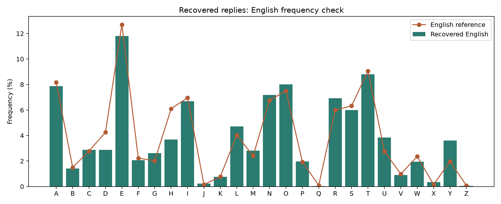
Mood 3; synthetic input: My final exams start next week and I cannot sleep because I keep thinking I will fail.
IT IS COMPLETELY UNDERSTANDABLE THAT YOU ARE FEELING OVERWHELMED RIGHT NOW WITH FINAL EXAMS JUST AROUND THE CORNER WHEN STRESS KEEPS YOUR MIND RACING AT NIGHT IT CREATES A FRUSTRATING CYCLE THAT ONLY MAKES DAYTIME FOCUS HARDER TO MAINTAIN I WANT YOU TO KNOW ROHAAN THAT THIS INTENSE ANXIETY IS A VERY NORMAL RESPONSE TO HIGHPRESSURE SITUATIONS BUT IT DOES NOT MEAN YOU ARE ACTUALLY GOING TO FAIL LETS TRY TO GENTLY BREAK THAT CYCLE BY WRITING DOWN YOUR WORRIES BEFORE BED TO GET THEM OUT OF YOUR HEAD AND THEN REPLACING THEM WITH A FEW DEEP SLOW BREATHS REMEMBER THAT YOUR WORTH IS NOT DEFINED BY A SINGLE TEST SCORE AND YOU HAVE ALREADY PUT IN THE HARD WORK TO PREPARE GIVE YOURSELF PERMISSION TO STEP AWAY FROM THE BOOKS TONIGHT GET SOME REST AND TRUST THAT YOUR BRAIN WILL RETAIN EVERYTHING YOU NEED WHEN IT MATTERS MOST
SESSION 1: 675 ciphertext letters; mood is not used for recovery.
Most frequent ciphertext letters: [('I', 80), ('J', 77), ('G', 53), ('V', 52), ('A', 51), ('T', 46)]
Test all 312 valid Affine candidates; rank decrypted English by chi-squared.
Leading candidates (chi-squared, a, b): [(35.2991846645043, 7, 6), (921.3396854385927, 5, 22), (966.1396941372856, 23, 8), (997.0533588920048, 9, 8), (1009.0987034491304, 23, 21)]
Winning mapping: E -> I, T -> J.
4a+b = 8 (mod 26); 19a+b = 9 (mod 26).
Subtraction gives 15a = 1 (mod 26).
26 = 1*15+11; 15 = 1*11+4; 11 = 2*4+3; 4 = 1*3+1.
Back substitution: 1 = 7*15 - 4*26; inverse(15) = 7.
a = 7*1 mod 26 = 7; b = 8-4*7 mod 26 = 6.
gcd(7,26)=1. Extended Euclid for decryption:
26 = 3 x 7 + 5
7 = 1 x 5 + 2
5 = 2 x 2 + 1
2 = 2 x 1 + 0
inverse(a)=15; 7*15 = 4*26 + 1.
D(y) = 15*(y-6) mod 26.
English E/T mappings are candidate hypotheses, not guaranteed rank-1/rank-2 identities.
Independent checks: decoded UTF-8 request fields and re-encryption equality.
The username and concern were also decrypted and de-armored successfully. Their complete recovered text is in output/decrypted.csv and output/decrypted_sessions.txt; the verification compares it exactly with the synthetic input.
Mood 4; synthetic input: I moved to a new city for university and I have not made any friends yet, the weekends feel very empty.
MOVING TO A BRANDNEW CITY FOR UNIVERSITY IS A MASSIVE TRANSITION AND IT MAKES COMPLETE SENSE THAT YOU ARE FEELING A BIT OVERWHELMED AND LONELY RIGHT NOW THE QUIET OF THE WEEKENDS CAN FEEL HEAVY WHEN YOU ARE STILL TRYING TO FIND YOUR FOOTING IN AN UNFAMILIAR PLACE ROHAAN PLEASE REMEMBER THAT BUILDING A GENUINE COMMUNITY TAKES TIME AND THOSE EMPTY HOURS ARE NOT A REFLECTION OF YOUR WORTH OR ABILITY TO CONNECT TRY TO TREAT YOURSELF WITH GRACE WHILE YOU NAVIGATE THIS ADJUSTMENT PERIOD PERHAPS EXPLORING LOCAL COFFEE SHOPS OR CAMPUS WALKING PATHS JUST TO GET OUT OF YOUR DORM YOU MIGHT ALSO CONSIDER JOINING A UNIVERSITY CLUB OR A CASUAL STUDY GROUP AS SHARED INTERESTS ARE ONE OF THE MOST NATURAL WAYS TO SPARK NEW FRIENDSHIPS EVERY SMALL STEP YOU TAKE OUTSIDE YOUR COMFORT ZONE BRINGS YOU CLOSER TO FINDING YOUR PEOPLE AND I AM RIGHT HERE CHEERING YOU ON AS YOU BUILD THIS EXCITING NEW CHAPTER
SESSION 2: 737 ciphertext letters; mood is not used for recovery.
Most frequent ciphertext letters: [('S', 80), ('E', 65), ('X', 63), ('I', 56), ('C', 55), ('V', 53)]
Test all 312 valid Affine candidates; rank decrypted English by chi-squared.
Leading candidates (chi-squared, a, b): [(46.206098818975455, 9, 8), (1161.676135795514, 11, 5), (1254.5951872169123, 11, 18), (1293.0035030760578, 25, 10), (1372.4592401841912, 19, 18)]
Winning mapping: E -> S, T -> X.
4a+b = 18 (mod 26); 19a+b = 23 (mod 26).
Subtraction gives 15a = 5 (mod 26).
26 = 1*15+11; 15 = 1*11+4; 11 = 2*4+3; 4 = 1*3+1.
Back substitution: 1 = 7*15 - 4*26; inverse(15) = 7.
a = 7*5 mod 26 = 9; b = 18-4*9 mod 26 = 8.
gcd(9,26)=1. Extended Euclid for decryption:
26 = 2 x 9 + 8
9 = 1 x 8 + 1
8 = 8 x 1 + 0
inverse(a)=3; 9*3 = 1*26 + 1.
D(y) = 3*(y-8) mod 26.
English E/T mappings are candidate hypotheses, not guaranteed rank-1/rank-2 identities.
Independent checks: decoded UTF-8 request fields and re-encryption equality.
The username and concern were also decrypted and de-armored successfully. Their complete recovered text is in output/decrypted.csv and output/decrypted_sessions.txt; the verification compares it exactly with the synthetic input.
Mood 5; synthetic input: I am working part time and studying full time, and I feel tired all the time and fall behind on assignments.
BALANCING A PARTTIME JOB WITH A FULLTIME COURSE LOAD IS AN IMMENSE UNDERTAKING SO IT IS COMPLETELY UNDERSTANDABLE THAT YOUR ENERGY RESERVES FEEL ENTIRELY DEPLETED RIGHT NOW WHEN YOU ARE CONSTANTLY RUNNING ON EMPTY YOUR FOCUS AND ACADEMIC PERFORMANCE NATURALLY TAKE A HIT WHICH ONLY ADDS HEAVY LAYERS OF STRESS AND GUILT TO YOUR PLATE PLEASE REMEMBER ROHAAN THAT YOU DO NOT HAVE TO CARRY THIS OVERWHELMING WEIGHT ALL BY YOURSELF WITHOUT SEEKING SOME MUCHNEEDED RELIEF TRY TO LOOK CLOSELY AT YOUR WEEKLY SCHEDULE TO IDENTIFY EVEN TINY POCKETS OF TIME WHERE YOU CAN CARVE OUT GUILTFREE REST OR RENEGOTIATE DEADLINES WITH YOUR PROFESSORS COMMUNICATING YOUR HEAVY LOAD TO YOUR ACADEMIC ADVISORS OR WORKPLACE MANAGERS CAN OFTEN OPEN DOORS TO FLEXIBLE ACCOMMODATIONS YOU MIGHT NOT HAVE CONSIDERED YOU ARE DOING THE ABSOLUTE BEST YOU CAN WITH AN EXCEPTIONALLY DEMANDING ROUTINE AND LEARNING TO LOWER THE BAR OF PERFECTION IS A VITAL ACT OF SELFCARE BE GENTLE WITH YOURSELF THIS WEEK CELEBRATE THE SMALL VICTORIES AND REMEMBER THAT PROTECTING YOUR MENTAL HEALTH IS ALWAYS MORE IMPORTANT THAN DOING IT ALL
SESSION 3: 917 ciphertext letters; mood is not used for recovery.
Most frequent ciphertext letters: [('C', 117), ('L', 79), ('I', 78), ('K', 75), ('P', 62), ('X', 61)]
Test all 312 valid Affine candidates; rank decrypted English by chi-squared.
Leading candidates (chi-squared, a, b): [(50.31556254175625, 11, 10), (1272.0990086598872, 3, 2), (1398.118168214793, 19, 24), (1582.0321454358977, 25, 2), (1679.7119927006156, 25, 15)]
Winning mapping: E -> C, T -> L.
4a+b = 2 (mod 26); 19a+b = 11 (mod 26).
Subtraction gives 15a = 9 (mod 26).
26 = 1*15+11; 15 = 1*11+4; 11 = 2*4+3; 4 = 1*3+1.
Back substitution: 1 = 7*15 - 4*26; inverse(15) = 7.
a = 7*9 mod 26 = 11; b = 2-4*11 mod 26 = 10.
gcd(11,26)=1. Extended Euclid for decryption:
26 = 2 x 11 + 4
11 = 2 x 4 + 3
4 = 1 x 3 + 1
3 = 3 x 1 + 0
inverse(a)=19; 11*19 = 8*26 + 1.
D(y) = 19*(y-10) mod 26.
English E/T mappings are candidate hypotheses, not guaranteed rank-1/rank-2 identities.
Independent checks: decoded UTF-8 request fields and re-encryption equality.
The username and concern were also decrypted and de-armored successfully. Their complete recovered text is in output/decrypted.csv and output/decrypted_sessions.txt; the verification compares it exactly with the synthetic input.
Mood 6; synthetic input: I had a big argument with my older brother and now we are not talking, and it is bothering me every day.
IT IS COMPLETELY NORMAL TO FEEL UNSETTLED WHEN A CLOSE FAMILY CONFLICT GOES UNRESOLVED ESPECIALLY WITH A SIBLING CARRYING THAT DAILY WEIGHT CAN BE EXHAUSTING SO PLEASE BE GENTLE WITH YOURSELF AS YOU PROCESS THESE HEAVY FEELINGS ROHAAN SOMETIMES TAKING THE FIRST STEP TOWARD MENDING A BRIDGE FEELS DAUNTING BUT SENDING A SIMPLE LOWPRESSURE TEXT CAN HELP OPEN THE DOOR YOU MIGHT LET YOUR BROTHER KNOW THAT YOU MISS YOUR CONNECTION AND WANT TO TALK WHEN HE IS READY FOCUS ON EXPRESSING YOUR OWN FEELINGS WITHOUT PLACING BLAME AS THIS OFTEN LOWERS DEFENSES AND INVITES A CALMER CONVERSATION REMEMBER THAT HEALING TAKES TIME AND SIMPLY SHOWING A WILLINGNESS TO LISTEN CAN GO A LONG WAY TOWARD RESTORING YOUR PEACE OF MIND
SESSION 4: 596 ciphertext letters; mood is not used for recovery.
Most frequent ciphertext letters: [('U', 74), ('Z', 49), ('L', 48), ('W', 46), ('O', 44), ('C', 43)]
Test all 312 valid Affine candidates; rank decrypted English by chi-squared.
Leading candidates (chi-squared, a, b): [(38.749738016968, 15, 12), (933.3681954513027, 7, 24), (1057.7666604606627, 1, 20), (1148.4606944229565, 9, 1), (1159.2973269560998, 1, 7)]
Winning mapping: E -> U, T -> L.
4a+b = 20 (mod 26); 19a+b = 11 (mod 26).
Subtraction gives 15a = 17 (mod 26).
26 = 1*15+11; 15 = 1*11+4; 11 = 2*4+3; 4 = 1*3+1.
Back substitution: 1 = 7*15 - 4*26; inverse(15) = 7.
a = 7*17 mod 26 = 15; b = 20-4*15 mod 26 = 12.
gcd(15,26)=1. Extended Euclid for decryption:
26 = 1 x 15 + 11
15 = 1 x 11 + 4
11 = 2 x 4 + 3
4 = 1 x 3 + 1
3 = 3 x 1 + 0
inverse(a)=7; 15*7 = 4*26 + 1.
D(y) = 7*(y-12) mod 26.
English E/T mappings are candidate hypotheses, not guaranteed rank-1/rank-2 identities.
Independent checks: decoded UTF-8 request fields and re-encryption equality.
The username and concern were also decrypted and de-armored successfully. Their complete recovered text is in output/decrypted.csv and output/decrypted_sessions.txt; the verification compares it exactly with the synthetic input.
Mood 7; synthetic input: My final year project deadline is close, my group members are not replying, and I feel like I have to do everything alone.
CARRYING THE ENTIRE WEIGHT OF A MAJOR FINALYEAR PROJECT ALL BY YOURSELF IS AN OVERWHELMING BURDEN ESPECIALLY WHEN YOU ARE COUNTING ON YOUR PEERS FOR SUPPORT IT IS COMPLETELY NATURAL TO FEEL ANXIOUS FRUSTRATED AND EXHAUSTED UNDER SO MUCH MOUNTING PRESSURE ROHAAN PLEASE REMEMBER THAT YOUR WELLBEING MATTERS JUST AS MUCH AS THIS GRADE AND YOU DO NOT HAVE TO FIX EVERYTHING IN A SINGLE FRANTIC RUSH START BY BREAKING THE REMAINING WORKLOAD DOWN INTO SMALL MANAGEABLE DAILY TASKS SO YOU CAN REGAIN A SENSE OF CONTROL COMMUNICATE CLEARLY WITH YOUR PROFESSOR ABOUT THE CURRENT TEAM DYNAMIC TO ENSURE YOUR INDIVIDUAL EFFORT IS PROPERLY RECOGNIZED FINALLY REMEMBER TO PAUSE BREATHE AND TRUST IN YOUR OWN CAPABILITY TO CROSS THE FINISH LINE SUCCESSFULLY
SESSION 5: 623 ciphertext letters; mood is not used for recovery.
Most frequent ciphertext letters: [('W', 68), ('J', 53), ('O', 52), ('B', 46), ('Q', 46), ('N', 45)]
Test all 312 valid Affine candidates; rank decrypted English by chi-squared.
Leading candidates (chi-squared, a, b): [(64.5930133575743, 15, 14), (935.9903914607117, 23, 22), (967.5166557910092, 1, 9), (1066.4679458418968, 7, 0), (1092.719316326317, 1, 22)]
Winning mapping: E -> W, T -> N.
4a+b = 22 (mod 26); 19a+b = 13 (mod 26).
Subtraction gives 15a = 17 (mod 26).
26 = 1*15+11; 15 = 1*11+4; 11 = 2*4+3; 4 = 1*3+1.
Back substitution: 1 = 7*15 - 4*26; inverse(15) = 7.
a = 7*17 mod 26 = 15; b = 22-4*15 mod 26 = 14.
gcd(15,26)=1. Extended Euclid for decryption:
26 = 1 x 15 + 11
15 = 1 x 11 + 4
11 = 2 x 4 + 3
4 = 1 x 3 + 1
3 = 3 x 1 + 0
inverse(a)=7; 15*7 = 4*26 + 1.
D(y) = 7*(y-14) mod 26.
English E/T mappings are candidate hypotheses, not guaranteed rank-1/rank-2 identities.
Independent checks: decoded UTF-8 request fields and re-encryption equality.
The username and concern were also decrypted and de-armored successfully. Their complete recovered text is in output/decrypted.csv and output/decrypted_sessions.txt; the verification compares it exactly with the synthetic input.
A deterministic monoalphabetic substitution preserves word lengths, spaces and letter-count patterns. Repeated names or conventional advice wording supply likely plaintext. Where a product appends a fixed disclaimer, the same wording can expose letter correspondences across replies. This original server does not enforce such a disclaimer, so none is added or claimed as evidence here. Even without it, the small 312-key space and normal English statistics were sufficient.
The client armor is encoding, not additional cryptographic protection. Mood is sent in clear and deterministically selects the key. The original server also writes decrypted advice to admin_log.txt. Network encryption alone would not protect this plaintext log from local users or malware with file access. A stronger model does not repair a weak encryption wrapper.
| Alternative | Practical protection | Limits |
|---|---|---|
| UNIX domain socket | Use a pathname socket in a private directory, owner-only permissions and peer-credential checks. | This gives local access control, not encryption against a privileged host attacker. |
| TLS 1.3 | Authenticate the server and encrypt TCP traffic. For a local self-signed certificate, pin or explicitly trust the certificate; keep hostname verification. | Disabling verification defeats authentication. Protect private keys and consider mutual TLS for client authentication. |
All concerns are fictional, and capture was restricted to my own loopback application. No public host, patient data or another user’s traffic was tested. The original model prompt says it is a licensed therapist; that claim is unsuitable for a real service and is preserved only to reproduce the supplied lab behavior. Model-generated replies in this report are test data, not medical advice.
The result shows the difference between hiding readable text and providing modern confidentiality and integrity. Frequency recovery can be uncertain on very short samples, so independent validation matters. Gemini also changes the privacy boundary: prompts leave the machine over HTTPS. Instructor permission does not make this an offline or wholly local application.
Preparation note: AI assistance was used to prepare code and report structure. The included run artifacts, independent checks and source attribution allow the work to be reviewed and reproduced.
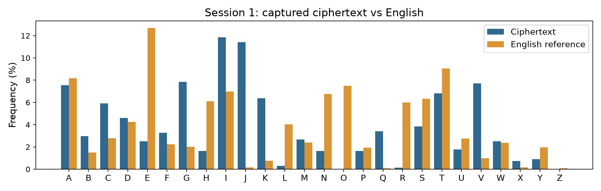
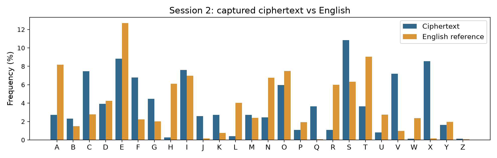
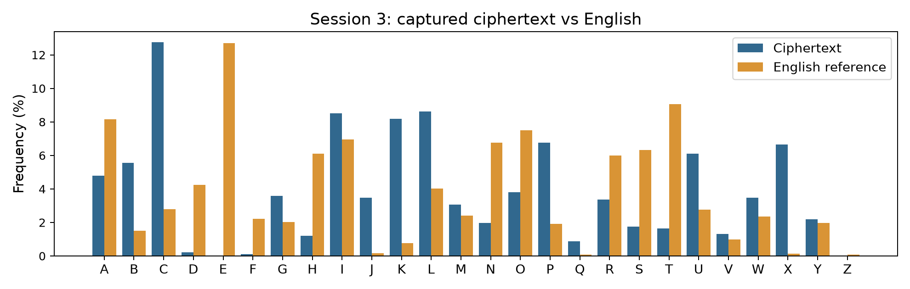
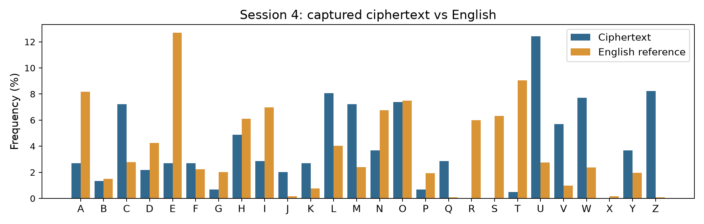
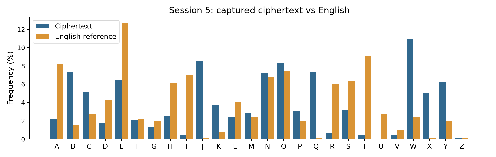
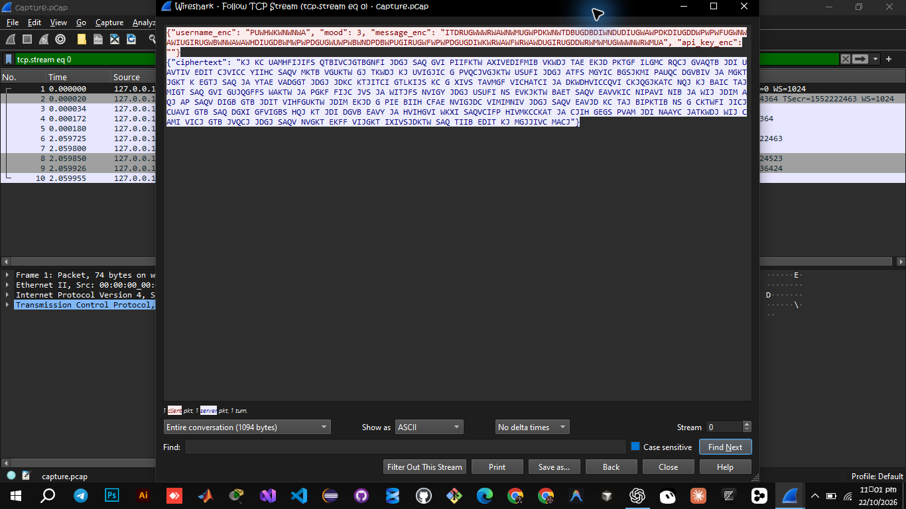
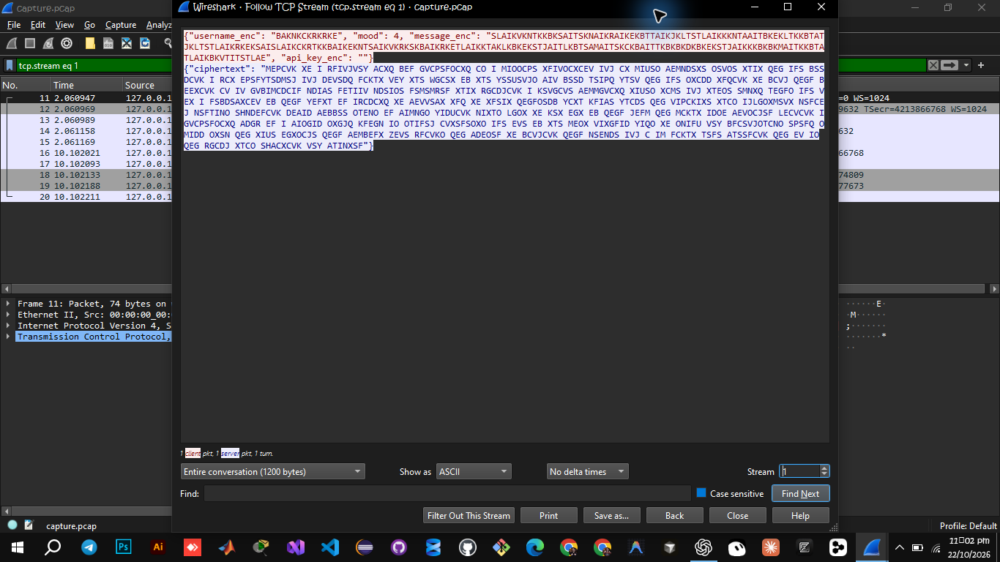

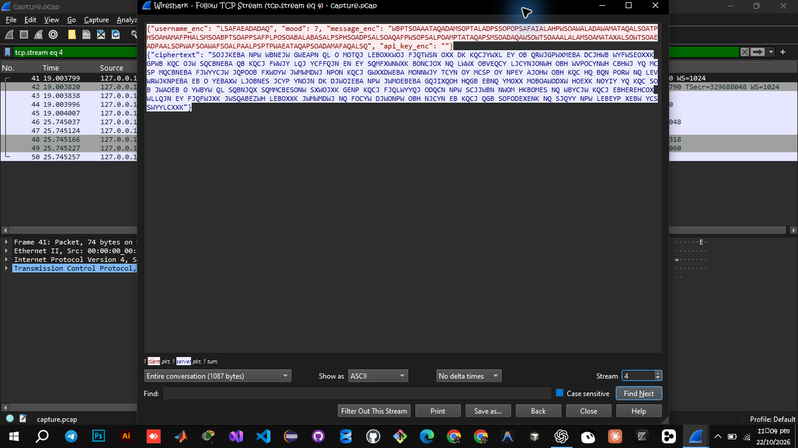
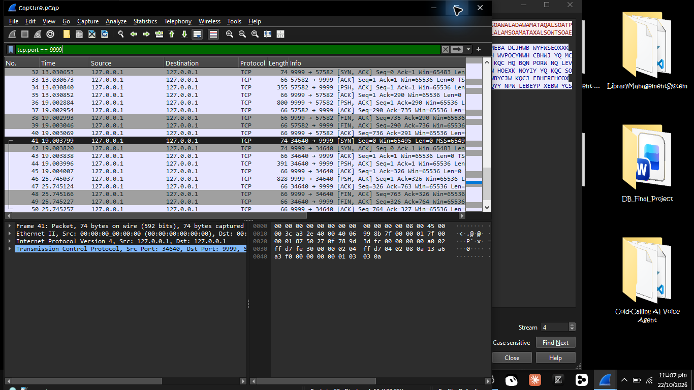
| Letter | Cipher count | Cipher % | Recovered % | English % |
|---|---|---|---|---|
| A | 51 | 7.5556 | 7.8519 | 8.167 |
| B | 20 | 2.963 | 1.6296 | 1.492 |
| C | 40 | 5.9259 | 1.7778 | 2.782 |
| D | 31 | 4.5926 | 2.963 | 4.253 |
| E | 17 | 2.5185 | 11.8519 | 12.702 |
| F | 22 | 3.2593 | 1.6296 | 2.228 |
| G | 53 | 7.8519 | 2.5185 | 2.015 |
| H | 11 | 1.6296 | 4.5926 | 6.094 |
| I | 80 | 11.8519 | 6.3704 | 6.966 |
| J | 77 | 11.4074 | 0.1481 | 0.153 |
| K | 43 | 6.3704 | 0.8889 | 0.772 |
| L | 2 | 0.2963 | 3.2593 | 4.025 |
| M | 18 | 2.6667 | 2.6667 | 2.406 |
| N | 11 | 1.6296 | 6.8148 | 6.749 |
| O | 0 | 0.0 | 7.5556 | 7.507 |
| P | 11 | 1.6296 | 1.6296 | 1.929 |
| Q | 23 | 3.4074 | 0.0 | 0.095 |
| R | 1 | 0.1481 | 7.7037 | 5.987 |
| S | 26 | 3.8519 | 5.9259 | 6.327 |
| T | 46 | 6.8148 | 11.4074 | 9.056 |
| U | 12 | 1.7778 | 3.4074 | 2.758 |
| V | 52 | 7.7037 | 0.7407 | 0.978 |
| W | 17 | 2.5185 | 2.5185 | 2.36 |
| X | 5 | 0.7407 | 0.2963 | 0.15 |
| Y | 6 | 0.8889 | 3.8519 | 1.974 |
| Z | 0 | 0.0 | 0.0 | 0.074 |
Counts use A–Z only. Spaces are excluded. The reference is the letter-frequency table attributed to Lewand (2000). The CSV includes all five tables in machine-readable form.
| Letter | Cipher count | Cipher % | Recovered % | English % |
|---|---|---|---|---|
| A | 20 | 2.7137 | 7.5984 | 8.167 |
| B | 17 | 2.3066 | 1.0855 | 1.492 |
| C | 55 | 7.4627 | 2.7137 | 2.782 |
| D | 29 | 3.9349 | 2.578 | 4.253 |
| E | 65 | 8.8195 | 10.8548 | 12.702 |
| F | 50 | 6.7843 | 2.3066 | 2.228 |
| G | 33 | 4.4776 | 2.7137 | 2.015 |
| H | 2 | 0.2714 | 3.6635 | 6.094 |
| I | 56 | 7.5984 | 7.4627 | 6.966 |
| J | 19 | 2.578 | 0.4071 | 0.153 |
| K | 20 | 2.7137 | 0.8141 | 0.772 |
| L | 3 | 0.4071 | 3.9349 | 4.025 |
| M | 20 | 2.7137 | 2.7137 | 2.406 |
| N | 18 | 2.4423 | 7.1913 | 6.749 |
| O | 44 | 5.9701 | 8.8195 | 7.507 |
| P | 8 | 1.0855 | 2.4423 | 1.929 |
| Q | 27 | 3.6635 | 0.1357 | 0.095 |
| R | 8 | 1.0855 | 6.7843 | 5.987 |
| S | 80 | 10.8548 | 5.9701 | 6.327 |
| T | 27 | 3.6635 | 8.5482 | 9.056 |
| U | 6 | 0.8141 | 4.4776 | 2.758 |
| V | 53 | 7.1913 | 1.0855 | 0.978 |
| W | 1 | 0.1357 | 1.6282 | 2.36 |
| X | 63 | 8.5482 | 0.2714 | 0.15 |
| Y | 12 | 1.6282 | 3.6635 | 1.974 |
| Z | 1 | 0.1357 | 0.1357 | 0.074 |
Counts use A–Z only. Spaces are excluded. The reference is the letter-frequency table attributed to Lewand (2000). The CSV includes all five tables in machine-readable form.
| Letter | Cipher count | Cipher % | Recovered % | English % |
|---|---|---|---|---|
| A | 44 | 4.7983 | 8.1788 | 8.167 |
| B | 51 | 5.5616 | 1.3086 | 1.492 |
| C | 117 | 12.759 | 3.5987 | 2.782 |
| D | 2 | 0.2181 | 3.3806 | 4.253 |
| E | 0 | 0.0 | 12.759 | 12.702 |
| F | 1 | 0.1091 | 1.9629 | 2.228 |
| G | 33 | 3.5987 | 2.181 | 2.015 |
| H | 11 | 1.1996 | 3.4896 | 6.094 |
| I | 78 | 8.506 | 6.1069 | 6.966 |
| J | 32 | 3.4896 | 0.1091 | 0.153 |
| K | 75 | 8.1788 | 0.8724 | 0.772 |
| L | 79 | 8.615 | 5.5616 | 4.025 |
| M | 28 | 3.0534 | 3.0534 | 2.406 |
| N | 18 | 1.9629 | 6.6521 | 6.749 |
| O | 35 | 3.8168 | 8.506 | 7.507 |
| P | 62 | 6.7612 | 1.6358 | 1.929 |
| Q | 8 | 0.8724 | 0.0 | 0.095 |
| R | 31 | 3.3806 | 6.7612 | 5.987 |
| S | 16 | 1.7448 | 4.7983 | 6.327 |
| T | 15 | 1.6358 | 8.615 | 9.056 |
| U | 56 | 6.1069 | 3.4896 | 2.758 |
| V | 12 | 1.3086 | 1.1996 | 0.978 |
| W | 32 | 3.4896 | 1.7448 | 2.36 |
| X | 61 | 6.6521 | 0.2181 | 0.15 |
| Y | 20 | 2.181 | 3.8168 | 1.974 |
| Z | 0 | 0.0 | 0.0 | 0.074 |
Counts use A–Z only. Spaces are excluded. The reference is the letter-frequency table attributed to Lewand (2000). The CSV includes all five tables in machine-readable form.
| Letter | Cipher count | Cipher % | Recovered % | English % |
|---|---|---|---|---|
| A | 16 | 2.6846 | 7.2148 | 8.167 |
| B | 8 | 1.3423 | 1.3423 | 1.492 |
| C | 43 | 7.2148 | 2.8523 | 2.782 |
| D | 13 | 2.1812 | 2.6846 | 4.253 |
| E | 16 | 2.6846 | 12.4161 | 12.702 |
| F | 16 | 2.6846 | 2.0134 | 2.228 |
| G | 4 | 0.6711 | 3.6913 | 2.015 |
| H | 29 | 4.8658 | 3.6913 | 6.094 |
| I | 17 | 2.8523 | 7.2148 | 6.966 |
| J | 12 | 2.0134 | 0.0 | 0.153 |
| K | 16 | 2.6846 | 0.6711 | 0.772 |
| L | 48 | 8.0537 | 5.7047 | 4.025 |
| M | 43 | 7.2148 | 2.6846 | 2.406 |
| N | 22 | 3.6913 | 8.2215 | 6.749 |
| O | 44 | 7.3826 | 7.3826 | 7.507 |
| P | 4 | 0.6711 | 2.1812 | 1.929 |
| Q | 17 | 2.8523 | 0.0 | 0.095 |
| R | 0 | 0.0 | 4.8658 | 5.987 |
| S | 0 | 0.0 | 7.7181 | 6.327 |
| T | 3 | 0.5034 | 8.0537 | 9.056 |
| U | 74 | 12.4161 | 2.6846 | 2.758 |
| V | 34 | 5.7047 | 0.6711 | 0.978 |
| W | 46 | 7.7181 | 2.6846 | 2.36 |
| X | 0 | 0.0 | 0.5034 | 0.15 |
| Y | 22 | 3.6913 | 2.8523 | 1.974 |
| Z | 49 | 8.2215 | 0.0 | 0.074 |
Counts use A–Z only. Spaces are excluded. The reference is the letter-frequency table attributed to Lewand (2000). The CSV includes all five tables in machine-readable form.
| Letter | Cipher count | Cipher % | Recovered % | English % |
|---|---|---|---|---|
| A | 14 | 2.2472 | 8.3467 | 8.167 |
| B | 46 | 7.3836 | 1.7657 | 1.492 |
| C | 32 | 5.1364 | 3.2103 | 2.782 |
| D | 11 | 1.7657 | 2.5682 | 4.253 |
| E | 40 | 6.4205 | 10.9149 | 12.702 |
| F | 13 | 2.0867 | 2.4077 | 2.228 |
| G | 8 | 1.2841 | 2.2472 | 2.015 |
| H | 16 | 2.5682 | 3.0498 | 6.094 |
| I | 3 | 0.4815 | 6.4205 | 6.966 |
| J | 53 | 8.5072 | 0.4815 | 0.153 |
| K | 23 | 3.6918 | 0.4815 | 0.772 |
| L | 15 | 2.4077 | 4.9759 | 4.025 |
| M | 18 | 2.8892 | 2.8892 | 2.406 |
| N | 45 | 7.2231 | 7.3836 | 6.749 |
| O | 52 | 8.3467 | 7.3836 | 7.507 |
| P | 19 | 3.0498 | 2.0867 | 1.929 |
| Q | 46 | 7.3836 | 0.0 | 0.095 |
| R | 4 | 0.6421 | 8.5072 | 5.987 |
| S | 20 | 3.2103 | 6.26 | 6.327 |
| T | 3 | 0.4815 | 7.2231 | 9.056 |
| U | 0 | 0.0 | 5.1364 | 2.758 |
| V | 3 | 0.4815 | 0.6421 | 0.978 |
| W | 68 | 10.9149 | 1.2841 | 2.36 |
| X | 31 | 4.9759 | 0.4815 | 0.15 |
| Y | 39 | 6.26 | 3.6918 | 1.974 |
| Z | 1 | 0.1605 | 0.1605 | 0.074 |
Counts use A–Z only. Spaces are excluded. The reference is the letter-frequency table attributed to Lewand (2000). The CSV includes all five tables in machine-readable form.
All five recovered keys matched the instructor’s original key schedule after the ciphertext-only attack. All five server replies matched client-side decryption. All usernames and concerns matched the synthetic test inputs. Every server ciphertext was reproduced exactly by re-encrypting the recovered reply.
| Artifact | SHA-256 |
|---|---|
| capture.pcap | 8ff2ccdc5ac1021f4776d068e400dc1a30b284e15ee6720e16d0647a485db9e3 |
| Original server | 7149f7e524b70567a8d19360205105d7430dec5a9fa9557a4ab8bdf3b7ebf7dd |
Instructor source:
https://github.com/maadilrehman/PsycoSupport
Gemini API:
https://ai.google.dev/api/generate-content
TShark manual:
https://www.wireshark.org/docs/man-pages/tshark.html
UNIX sockets:
https://man7.org/linux/man-pages/man7/unix.7.html
TLS 1.3 specification:
https://www.rfc-editor.org/info/rfc9846
English reference: Robert Lewand, Cryptological Mathematics, Mathematical Association of America, 2000. Repository revision: 0b1cdbf83f4274a7073d6c83897826608e1741bd
Submission contains report.pdf, ciphertexts.csv, scripts/, evidence/, output/ and the reproducible lab source. Local .env, environments, caches and provisioning logs are excluded.